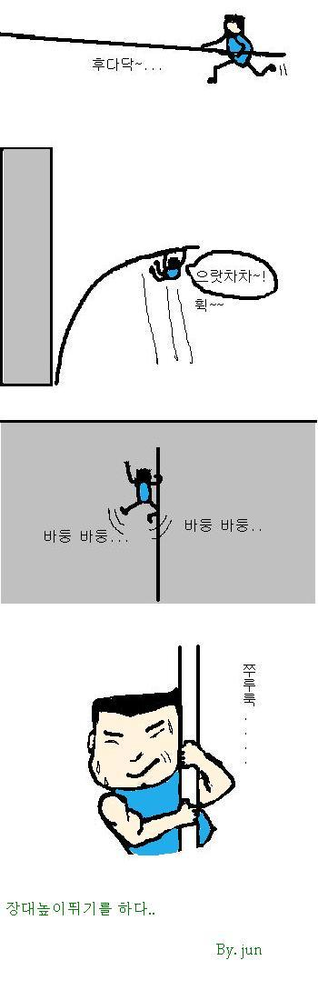

또 다시 친구의 그림을 복사해 둔다.
그냥 공감이 가서.
이녀석 의외로 감성적이란 말여...
from http://www.cyworld.com/ojjuni
서른이 다 돼가는 나이에.. 느끼는 인생이란...
매일 매일 장대높이뛰기를 하는 느낌이다..
(물론 실제로 해본적은 없지만...)
자 신이라는 벽을 뛰어넘어야 하고, 취업이라는 벽을 뛰어넘어야 하고,
좋아하는 사람의 종교가 다르다면 그 벽을 뛰어넘어야 하고(솔직히 이건 99% 불가다..),
사회에서 정한 여러 기준의 벽을 뛰어넘어야 하고... 만남이 뜸하거나 혹은 자주 만나도
하는일이 다른 친구들과 공유못하는 경험의 벽을 뛰어넘어야한다..
오늘도 난 장대높이뛰기를 한다...
또 다시 친구의 그림을 복사해 둔다.
그냥 공감이 가서.
이녀석 의외로 감성적이란 말여...
from http://www.cyworld.com/ojjuni